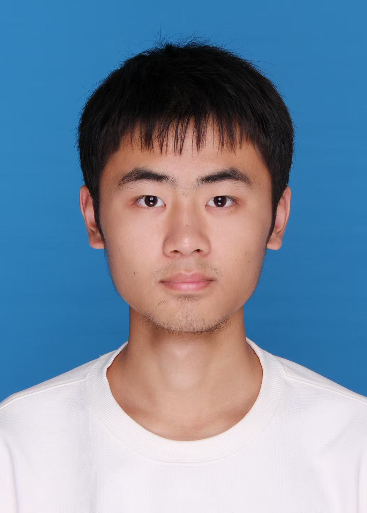

Zhejiang University
2024 – 2028 (expected)
B.Eng. in Agricultural Engineering, minor in Physics
College of Biosystems Engineering and Food Science

曾成宽
Undergraduate at Zhejiang University, working my way from engineering and physics toward AI.
I'm an undergraduate in the College of Biosystems Engineering and Food Science at Zhejiang University, majoring in Agricultural Engineering with a minor in Physics. My coursework so far has covered mechanics, control theory and computational physics, and I've built a few small robotics projects along the way.
My research so far is in multimodal learning. I'm a co-author on Spatial-Omni, which brings spatial audio understanding into multimodal large language models using First-Order Ambisonics (FOA) encoding.
Alongside my degree I'm teaching myself computer science, starting with UC Berkeley's CS61A. I'm aiming for a career in AI, either in research or in building the infrastructure that AI systems run on.
Zhejiang University
2024 – 2028 (expected)
B.Eng. in Agricultural Engineering, minor in Physics
College of Biosystems Engineering and Food Science
Spatial-Omni: Spatial Audio Understanding Integration in Multimodal LLMs via FOA Encoding
2026
Zhiyuan Zhu, Yixuan Chen, Yiwen Shao, Wenxiang Guo, Changhao Pan, Yu Zhang, Yuxiang Wang, Wei Liu, Houhua Zhang, Chengkuan Zeng, Wenbo Cheng, Yunxi Liu, Rui Yang, Steve Yves, Liefeng Bo, Zhou Zhao
Under review